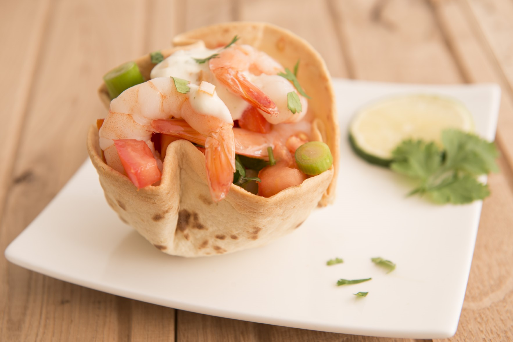
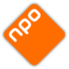
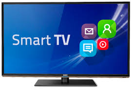

In deze opdracht moest er aan de hand van job stories en persona's uit de vorige opdracht een ontwerp tot stand komen voor een voedselbezorgapp. Deze app is eerst getekend op papier en vervolgens uitgewerkt tot een klikbaar prototype.

In deze opdracht werd er samen met twee medestudenten onderzoek gedaan naar de website van de NPO. Met behulp van user tests zijn de problemen van de NPO website achterhaald. Vervolgens zijn er verbeteringen voorgesteld die deze problemen verhelpen.

In deze opdracht moest er een nieuwe interface voor de smart TV ontworpen worden. Het is daarbij erg belangrijk dat er voor elke smart TV dezelfde interface komt. In dit project voerde ik de taak van facilitator uit.